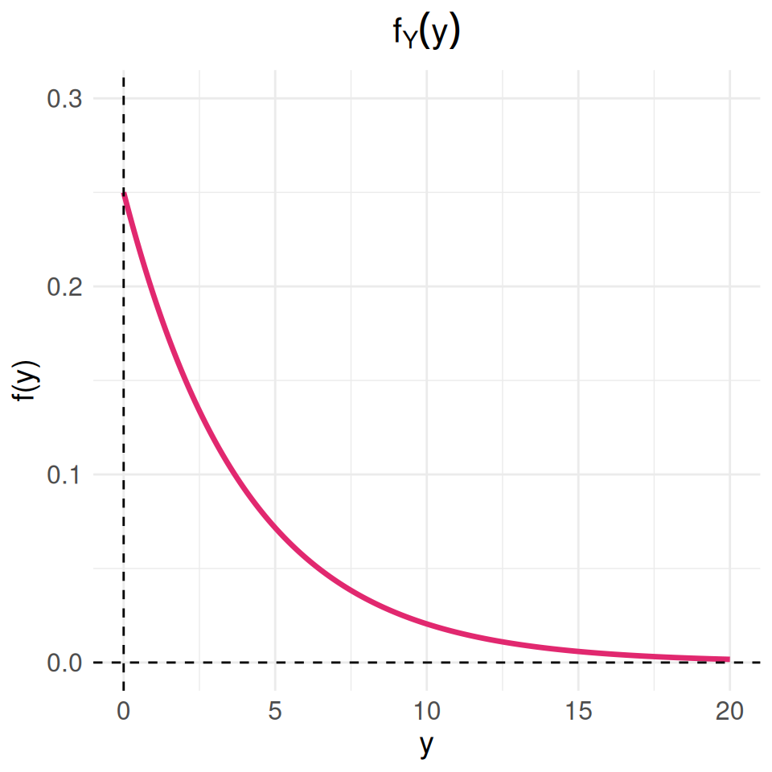

Módulo 2
dgonzalez

PROBLEMAS 2.1
Suponga que el conjunto universal consta de los números enteros del 1 al 10.
Sea
\(A=\{2,3,4\}\), \(B=\{3,4,5\}\), \(C=\{5,6,7\}\)
Determine los elementos de los siguientes conjuntos:
- \(A \cap B\)
- \(A' \cap B\)
- \((A \cap B)'\)
- \((A' \cap B')'\)
- \(A \cap (B \cup C)'\)
- Represente los conjuntos \(A\), \(B\) y \(C\) en un diagrama de Venn (John Venn-1880)
Suponga que el conjunto \(U\) está
dado por \(U = \{ x | 0 \leq x \leq 2
\}\) . Sean los conjuntos A y B
definidos como:
\[A=\{ x | 1/2 \leq x \leq
1\}\]
\[B = \{x|1/4 \leq x \leq 3/4 \}\]
Describa los siguientes conjuntos:
- \(A \cup B\)
- \(A \cup B'\)
- \(A \cap B'\)
- \((A \cap B)'\)
- Represente gráficamente los conjuntos solicitados
Una empresa que fabrica electrodomésticos recibe un lote de 1,500 unidades de un nuevo modelo de microondas. Después de una inspección preliminar, se determina que 400 microondas tienen defectos de fabricación y 1,100 cumplen con los estándares de calidad. Para garantizar la calidad del lote antes de su distribución, se selecciona una muestra aleatoria de 200 microondas (sin reemplazo) y se clasifican en defectuosos y no defectuosos.
- ¿Cuál es la probabilidad de que se encuentren exactamente 50 microondas defectuosos en la muestra?
- ¿Cuál es la probabilidad de que se encuentren al menos 50 microondas defectuosos en la muestra?
- ¿Cuál es la probabilidad de que el número de microondas defectuosos encontrados esté entre 50 y 60?
Diez fichas numeradas del 1 al 10 se mezclan en una urna. Se sacan de
la urna dos fichas numeradas (X,Y) una y otra a la vez sin
sustitución. ¿Cuál es la probabilidad de que X+Y=10 ?
Una empresa manufacturera revisa un lote de 16 productos antes de enviarlos al mercado. Tras una inspección, se determina que: 10 productos son de calidad óptima (buenos), 4 productos tienen pequeños defectos, pero aún pueden venderse con descuento y 2 productos tienen defectos graves, por lo que deben ser retirados del mercado. Se selecciona un producto al azar del lote. Calcule la probabilidad de que:
- El producto no tenga defectos (es decir, sea de calidad óptima).
- El producto tenga un defecto grave.
- El producto sea de calidad óptima o tenga un defecto grave (es decir, no tenga pequeños defectos).
En una línea de ensamblaje de una empresa manufacturera, se deben instalar 8 módulos de control en una máquina automatizada. Cada módulo puede configurarse en una de cuatro posiciones posibles: a, b, c o d.
¿De cuántas maneras diferentes se puede configurar el sistema si cada uno de los 8 módulos puede estar en cualquiera de las 4 posiciones?
¿Cuántas configuraciones son posibles si solo se utilizan las posiciones a y b, asegurando que ambas posiciones se usen el mismo número de veces en los 8 módulos?
Entre los números \(1,2,3 .... 50\)
se escoge un número al azar. ¿Cuál es la probabilidad de que el número
escogido sea divisible por 6 o por 8?
La urna 1 contiene x bolas blancas e y
bolas rojas. La urna 2 contiene z bolas blancas y
v bolas rojas. Se escoge una bola al azar de la urna 1 y se
pone en la urna 2. Entonces se escoge una bola al azar de la urna 2.
¿Cuál es la probabilidad de que esta bola sea blanca?
Un banco está evaluando el rendimiento de sus 200 sucursales en dos aspectos clave: nivel de eficiencia operativa y satisfacción del cliente. Después de un análisis, se obtuvieron los siguientes datos:
| Alta Satisfacción | Baja Satisfacción | Total | |
|---|---|---|---|
| Alta Eficiencia | 80 | 40 | 120 |
| Baja Eficiencia | 30 | 50 | 80 |
| Total | 110 | 90 | 200 |
Con base en la tabla, responde las siguientes preguntas:
¿Cuál es la probabilidad de que una sucursal seleccionada al azar tenga alta eficiencia y alta satisfacción del cliente?
¿Cuál es la probabilidad de que una sucursal tenga baja satisfacción del cliente?
Si se sabe que una sucursal tiene alta eficiencia, ¿cuál es la probabilidad de que también tenga alta satisfacción del cliente?
¿Las variables “eficiencia operativa” y “satisfacción del cliente” son independientes? Justifica tu respuesta usando probabilidades marginales y conjuntas.
En un estudio sobre el desempeño de los activos financieros en un fondo de inversión, se analizan dos factores clave que pueden afectar su rentabilidad:
Alta volatilidad del activo (AV). Baja liquidez del activo (BL)
Tras evaluar los activos del portafolio, se determina que:
- El 35% de los activos tienen alta volatilidad (AV).
- El 10% de los activos presentan baja liquidez (BL).
- El 4% de los activos muestran ambas características simultáneamente.
Con base en esta información:
- ¿Son independientes los sucesos “el activo tiene alta volatilidad” y “el activo presenta baja liquidez”?
- Calcular la probabilidad de que un activo tenga baja liquidez, dado que presenta alta volatilidad.
Suponga que una familia tiene cuatro hijos.
- Represente los eventos en un diagrama de árbol
- Hallar la probabilidad de que exactamente dos sean varones.
- Cuál es la probabilidad de que dos sean varones si el nacido en primer lugar es un varón?.
- ¿Cuál es la probabilidad de que el último hijo nazca varón si los tres primeros son mujeres?
Una empresa de comercio electrónico está analizando las razones por las cuales algunos clientes dejan de comprar en su plataforma. Se ha identificado que dos factores principales afectan la retención de los clientes:
Largos tiempos de entrega Problemas con la calidad del producto recibido
Un estudio de satisfacción del cliente revela que:
El 7% de los clientes experimenta ambos problemas (demoras en la entrega y problemas de calidad).
El 40% de los clientes ha enfrentado largos tiempos de entrega.
El 25% de los clientes ha recibido productos con defectos o problemas de calidad. Con base en esta información:
¿Cuál es el porcentaje de clientes que dejan de comprar por razones distintas a las mencionadas?
Si un cliente ha experimentado largos tiempos de entrega, ¿cuál es la probabilidad de que también haya recibido un producto defectuoso?
Se cree que la distribución de los grupos sanguíneos en Estados
Unidos en la Segunda Guerra Mundial era: tipo A, 41%;
tipo B, 9%; tipo AB, 4%; y
tipo O, 46%. Se estima que en esa época, el 4% de las
personas pertenecientes al tipo O fue clasificado como del
tipo A; el 88% de los del tipo A fue
correctamente clasificado; el 4% de los del tipo B se
clasificó como del tipo A, y el 10% de los del
tipo AB fue, igualmente, clasificado como del
tipo A. Un soldado fue herido y conducido a la enfermería.
Se le clasificó como del tipo A. ¿Cuál es la probabilidad
de que tal grupo sea ciertamente el suyo?
Tomados de J. Susan Milto (2001)
En el colegio Anglo-Frances se imparten sólo los idiomas inglés y francés. El 80% de los alumnos estudian inglés y el resto francés. El 30% de los alumnos que cursan de inglés son socio del club musical del colegio, mientras de los que estudian francés son socio de dicho club el 40%. Si el director del colegio elige un alumno de manera aleatoria, ¿qué tan probable es que dicho alumno pertenezca al club de musical? . Por otra parte el psicólogo del colegio afirma que estudiar inglés es un evento independiente de estudiar francés. ¿usted que opina respecto a esta afirmación? (justifique su respuesta)
En una universidad de la región hay 135 estudiantes distribuidos en tres grupos. Primeros semestre (1 a 3), mitad de carrera (4 a 7) y final de carrera (8 a 10). Esta población esta conformada por estudiantes que realizan actividades extracuricolares y aquellos que no participan en ninguna actividad, distribuidos como se muestra en la siguiente tabla:
| Participa en actividades del MU | No participa en actividades del MU | |
|---|---|---|
| Primeros semestres | 1250 | 1530 |
| Mitad de carrera | 465 | 350 |
| Final de carrera | 270 | 270 |
Se ha encomendado a un grupo de profesores consejeros, seleccionar un estudiante de este grupo para guiarlos académicamente en su proceso de formación. El grupo de profesores está conformado por Sandra, Isabel, David, Daniel y Gerardo
Sandra prefiere que el grupo de estudiantes a su cargo sean estudiantes de primeros semestre y que participan en actividades del Medio Universitario (MU) . Isabel en cambio los eligirá dentro del grupo de estudiantes que está finalizando carrera, dentro de los que prefieren no participar en actividades del MU. Por su parte David desea estudiantes sean del rango intermedio o mitad de carrera, pues ellos no han realizado la escogencia del énfasis. Daniel solicita un listado de los estudiantes que participan e actividades del MU y de ellos desea que el estudiante a su cargo esté cursando últimos semestre. Finalmente Gerardo solo quiere que el estudiante seleccionado para su acompañamiento sea de primeros semestre. Si en cada caso los estudiantes son selecionados de maneta aletatoria de toda la población tiene la mayor probabilidad de ver cumplido sus deseos?
library(dplyr)
x = c(1250,465,270,1530,350,270) %>%
matrix(nrow=3)
colnames(x) = c("| particima MU", "| NO participa MU")
rownames(x) = c("Primeros semestres", "Mitad carrera", "Final carrera")
x1 =prop.table(x)
addmargins(x1)Una empresa exportadora de productos electrónicos realiza pruebas de calidad en sus dispositivos antes de enviarlos a diferentes mercados internacionales.
Si un producto tiene un defecto grave, la inspección de calidad lo detecta con un 96% de precisión.
Si el producto no tiene defectos, la inspección lo clasifica correctamente como “apto para exportación” con un 94% de precisión.
Se estima que 1 de cada 100 productos presenta defectos graves.
Con base en esta información:
Si un producto es marcado como defectuoso en la inspección, ¿qué tan probable es que realmente tenga un defecto grave?
Si un producto pasa la inspección sin ser marcado como defectuoso, ¿cuál es la probabilidad de que realmente no tenga defectos?
Se escogen al azar 5 lámparas de 25 de las cuales 8 son defectuosas.
Hallar la probabilidad de que:
a. Ninguna de las lámparas
seleccionadas sea defectuosa. b. Exactamente una de las lámparas
seleccionadas sea defectuosa. c. Por lo menos una de las lámparas
seleccionadas no sea defectuosa
Un estudiante realiza dos exámenes en un mismo día. La probabilidad de que apruebe el primer examen es de 0.6 . La probabilidad de que apruebe el segundo examen es de 0.8; y la de que apruebe los dos exámenes es 0.5 :
- Represente la información suministrada mediante:
- Una tabla cruzada, con las probabilidades marginales, conjuntas y condicionales
- Diagrama de árbol,
- Un diagrama de Venn
- Que es más probable que ocurra :
- Que sabiendo que gane el primer examen, también gane el segundo examen
- Que sabiendo que perdió el primer examen, también pierda el segundo examen
El Departamento de crédito de una cadena de supermercados, informó que el 30% de sus ventas se pagan con efectivo o con cheque; 30% se paga con tarjeta de crédito y el resto con tarjeta débito. Veinte por ciento de las ventas realizadas con efectivo o cheque, noventa por ciento de las compras realizadas con tarjeta de crédito y el sesenta por ciento de las compras realizadas con tarjeta débito, son realizadas por más de 50.000. La señora Fatima acaba de comprar un vestido nuevo que le costó 120.000. ¿Que es más probable que halla pagado su vestido con tarjeta de crédito o que lo halla hecho con tarjeta débito?
En una fábrica de artículos para protección biodegradables, cuatro operarios colocan etiquetas de caducidad en cada artículo al final de la línea de producción. Juan, quien coloca la fecha de caducidad en un 40 % de los paquetes no logra ponerla en uno de cada 200 paquetes; Nicolle, quien coloca en 30 % de los paquetes, no logra colocarla en uno de 100 paquetes; Sara, quien coloca etiquetas en el 15 % de los paquetes, no lo hace una vez en 90 paquetes; y Nelson que fecha 15 % de los paquetes, falla en uno de cada 200 paquetes. Si un cliente se queja de que su paquete no muestra la fecha de caducidad. ¿Cuál de los empleados es el más probable culpable de esta omisión?
Uno de los laboratorios de la universidad tiene un esquema para recibir sus pedidos de insumos para sus investigadores. El plan tiene dos etapas. Primero el laboratorista selecciona una caja de 15 artículos y luego en una segunda etapa, extrae una muestra de 3 de ellos y los examina en búsqueda de defectos. Si no se encuentran artículos defectuosos en la revisión, el pedido es aceptado y es recibido por los encargados de la oficina de compras. En caso contrario, se regresa a su proveedor con el fin de que revise la totalidad de los artículos y se cerciore que todos están buenos. Por experiencia se estima que por cada caja de 15 artículos, hay 3 defectuosos, debido a problemas en el transporte. Bajo este esquema, ¿qué tan probable es que un pedido sea aceptado?
Examen de drogas Muchas universidades aplican exámenes para detectar el uso de drogas en estudiantes, con la finalidad de mejorar la salud y el bienestar en el campus, y reducir el riesgo de comportamiento inapropiado, accidentes y problemas académicos. Las personas que se oponen a esta práctica argumentan que este procedimiento puede etiquetar injustamente a algunos estudiantes, dado que las pruebas no son 100% confiables. Supongamos que una universidad utiliza una prueba con un 98% de exactitud, la cual identifica a un estudiante como usuario o no usuario de drogas con una probabilidad de .98. Para reducir la posibilidad de error, se solicita a cada estudiante que realice dos pruebas. Si los resultados de las dos pruebas en el mismo estudiante son eventos independientes, ¿cuáles son las probabilidades de los siguientes eventos?
Un estudiante que no consume drogas falle ambas pruebas.
Se detecte a un estudiante como usuario de drogas (falla en al menos una prueba).
Un estudiante que consume drogas pase ambas pruebas.
En una universidad de la región hay 4000 estudiantes distribuidos en tres grupos. Primeros semestre (1 a 3), mitad de carrera (4 a7) y final de carrera (8 a 10). Esta población esta conformada por estudiantes que realizan actividades extracuricolares y aquellos que no participan en ninguna actividad, distribuidos como se muestra en la siguiente tabla:
library(knitr)
x <- c(1250, 465, 270, 1530, 350, 270)
m <- matrix(x, nrow = 3)
colnames(m) <- c("MU", "MU*")
rownames(m) <- c("Primeros semestres", "Mitad de carrera", "Final de carrera")
kable(m, caption = "Tabla de Resultados por Etapa de la Carrera", align = "c")| MU | MU* | |
|---|---|---|
| Primeros semestres | 1250 | 1530 |
| Mitad de carrera | 465 | 350 |
| Final de carrera | 270 | 270 |
- MU : Participa de actividades programadas por el Medio Universitario
- MU* : No participa de actividades programadas por el Medio Universitario
Se ha encomendado a un grupo de profesores consejeros, seleccionar un estudiante de este grupo para guiarlos académicamente en su proceso de formación. El grupo de profesores está conformado por Sandra, Isabel, David, Daniel y Gerardo
Sandra prefiere que el grupo de estudiantes a su cargo sean estudiantes de primeros semestre y que participan en actividades del Medio Universitario (MU) . Isabel en cambio los eligirá dentro del grupo de estudiantes que está finalizando carrera, dentro de los que prefieren no participar en actividades del MU. Por su parte David desea estudiantes sean del rango intermedio o mitad de carrera, pues ellos no han realizado la escogencia del énfasis. Daniel solicita un listado de los estudiantes que participan e actividades del MU y de ellos desea que el estudiante a su cargo esté cursando últimos semestre. Finalmente Gerardo solo quiere que el estudiante seleccionado para su acompañamiento sea de primeros semestre. Si en cada caso los estudiantes son seleccionados de manera aleatoria de toda la población tiene la mayor probabilidad de ver cumplido sus deseos?
PROBLEMAS 2.3
Clasifique las siguientes variables aleatorias como discretas o continuas:
- \(X\) : el número de accidentes automovilísticos que ocurren al año en una ciudad determinada
- \(Y\) : el tiempo que dura un partido de futbol - tiempo real de juego en minutos-
- \(M\) : la cantidad de leche que una vaca determinada produce anualmente
- \(N\) : el número de huevos que una gallina pone mensualmente
- \(P\) : el número de permisos para construcción que los funcionarios de una ciudad emiten cada mes
- \(Q\) : el peso del grano maiz producido por hectarea
- \(R\) : la edad de un estudiante que ingresa a la universidad
- \(S\) : el número de zapatos que tiene un adolescente
- \(T\) : el número de crias que tiene una tortuga
- \(U\) : el consumo mensual de energía de un hogar en Cali
- \(V\) : el número de hijos por hagar en Colombia
- \(W\) : el número de pasajeros de un bus de servicio publico MIO
- \(X\) : el gasto diario de un estudiante universitario de la Javeriana Cali
- \(Y\) : la cantidad de calorías que un adulto con actividad moderada gasta diariamente
- \(Z\) : la utilidad mensual de una microempresa
El tiempo que pasa, en horas, para que un radar detecte entre conductores sucesivos a los que exceden los límites de velocidad es una variable aleatoria continua con una función de distribución acumulada:
\[F_{_{X}}(x) = \left \{ \begin{matrix} 0 & \mbox{ , } x \leq 0\\ 1-exp\{-8x \} & x \geq 0 \end{matrix}\right. \]
Calcule la probabilidad de que el tiempo que pase para que el radar detecte entre conductores sucesivos a los que exceden los límites de velocidad sea menor a 12 minutos
- usando la función de distribución de probabilidad acumulada de \(X\)
- utilizando la función de densidad de probabilidad de \(X\)
- Represente las función \(f(x)\) gráficamente
# Cargar ggplot2
library(ggplot2)
# Definir la función F(x)
Fx <- function(x) {
ifelse(x <= 0, 0, 1 - exp(-8 * x))
}
# Crear un rango de valores para x
x_values <- seq(0, 1, length.out = 500)
# Calcular los valores de F(x)
Fx_values <- Fx(x_values)
# Crear un dataframe con los valores
data <- data.frame(x = x_values, Fx = Fx_values)
# Graficar usando ggplot2
ggplot(data, aes(x = x, y = Fx)) +
geom_line(color = c3, size = 1.2) +
labs(x = "x", y = "F(x)", title = expression(F[x](x))) +
theme_minimal() +
xlim(0, 1) +
ylim(0, 1) +
theme(
plot.title = element_text(hjust = 0.5, size = 16),
axis.title = element_text(size = 14),
axis.text = element_text(size = 12)
) +
geom_hline(yintercept = 0, linetype = "dashed") +
geom_vline(xintercept = 0, linetype = "dashed")
Una variable aleatoria continua \(X\), que puede tomar valores entre \(x=2\) y \(x=5\), tiene una función de densidad data por \(f(x)=2(1*x)/27\).
Calcule: * \(P(X < 4)\) * \(P(3 \leq X < 4)\) * Represente la función \(f(x)\) gráficamente
Suponga que cierto tipo de pequeñas empresas de procesamiento de datos están tan especializadas que algunas tienen dificultades para obtener utilidades durante su primer año de operación. La función de densidad de probabilidad está dada por:
\[f_{_{Y}}(y) = \left \{ \begin{matrix} ky^4 (1-y)^3 & \mbox{ , } 0 \leq y \leq 1\\ 0 & \mbox{en otro caso } \end{matrix}\right. \]
- ¿Cuál es el valor de \(k\) que hace de la anterior una función de densidad de probabilidad válida?
- Calcule la probabilidad de que al menos 50% de las empresas tengan utilidades durante el primer año
- Calcule la probabilidad de que al menos el 80% de las empresas tengan utilidad durante el primer año
- Represente la función \(f(x)\) gráficamente
Calcule la distribución de probabilidad par el número de discos compactos de jazz, de una colección que consta de 5 de jazz, 2 de música clásica y 3 de rock, al seleccionar de esta colección 4 de manera aleatoria. Explique sus resultados utilizando una fórmula.
De una caja que contiene 4 monedad de 10 centavos y 2 monedas de 5 centavos se seleccionan 3 monedas de manera aleatoria y sin reemplazo. calcule la distribución de probabilidad para el total \(T\) de las 3 monedas . Exprese la distribución de probabilidad de forma gráfica
Con base en las pruebas extensas, el fabricante de una lavadora determinó que el tiempo \(Y\) (en años) para que el electrodoméstico requiera una reparación mayor se obtiene mediante la siguiente función de densidad de probabilidad :
\[f_{_{Y}}(y) = \left \{ \begin{matrix} \dfrac{1}{4} exp\{-y/4\} & \mbox{ , } y \geq 0\\ 0 & \mbox{en otro caso } \end{matrix}\right. \]
Los críticos considerarían que la lavadora es una ganga si no hay una probabilidad de que requiera una reparación mayor antes del sexto año. ¿Se puede considerar la lavadora como una ganga?
¿Cuál es la probabilidad de que a lavadora requiera una reparación mayor durante el primer año?
Represente la función \(f(x)\) gráficamente
# Cargar ggplot2
library(ggplot2)
# Definir la función f_Y(y)
fy <- function(y) {
ifelse(y >= 0, (1 / 4) * exp(-y / 4), 0)
}
# Crear un rango de valores para y
y_values <- seq(0, 20, length.out = 500)
# Calcular los valores de f_Y(y)
fy_values <- fy(y_values)
# Crear un dataframe con los valores
data_fy <- data.frame(y = y_values, fy = fy_values)
# Graficar usando ggplot2
ggplot(data_fy, aes(x = y, y = fy)) +
geom_line(color = c3, size = 1.2) +
labs(x = "y", y = "f(y)", title = expression(f[Y](y))) +
theme_minimal() +
xlim(0, 20) +
ylim(0, 0.3) +
theme(
plot.title = element_text(hjust = 0.5, size = 16),
axis.title = element_text(size = 14),
axis.text = element_text(size = 12)
) +
geom_hline(yintercept = 0, linetype = "dashed") +
geom_vline(xintercept = 0, linetype = "dashed")
Sea el número de llamadas telefónicas que recibe un conmutador durante un intervalo de 5 minutos una variable aleatoria \(X\) con la siguiente función de distribución de probabilidad:
\[f(x)= \dfrac{exp\{-2\}\hspace{.2cm} 2^x}{x!}\hspace{.3cm} \mbox{ , para }\hspace{.3cm} x = 01,2,3,4,5.... \]
- Determine la probabilidad de que \(X\) sea igual a \(0, 1, 2, 3, 4, 5\) y \(6\)
- Grafique la función de distribución de probabilidad para estos valores de \(X\)
- Determine la función de distribución acumulada para estos valores de \(X\).
- Represente la función \(f(x)\) gráficamente
El congestionamiento de pasajeros es un problema de servicio en los aeropuertos, en los cuales se instalan trenes para reducir la congestión. cuando se usa el tren el tiempo \(X\), en minutos, que toma viajar desde la terminal principal hasta una explanada específica tiene la siguiente función de densidad:
\[f_{_{X}}(x) = \left \{ \begin{matrix} \dfrac{1}{10} & \mbox{ , } 0 \leq y \leq 10\\ 0 & \mbox{en otro caso } \end{matrix}\right. \]
- Determine que la función de densidad de probabilidad anterior es válida
- Calcule la probabilidad de que el tiempo que le toma a un pasajero viajar desde la terminal principal hasta la explanada no exceda los 7 minutos
- Represente la función \(f(x)\) gráficamente
# Cargar ggplot2
library(ggplot2)
# Definir la función f_X(x)
fx <- function(x) {
ifelse(x >= 0 & x <= 10, 1/10, 0)
}
# Crear un rango de valores para x
x_values <- seq(0, 10, length.out = 500)
# Calcular los valores de f_X(x)
fx_values <- fx(x_values)
# Crear un dataframe con los valores
data_fx <- data.frame(x = x_values, fx = fx_values)
# Graficar usando ggplot2
ggplot(data_fx, aes(x = x, y = fx)) +
geom_line(color = c6, size = 1.2) +
labs(x = "x", y = "f(x)", title = expression(f[X](x))) +
theme_minimal() +
xlim(0, 10) +
ylim(0, 0.12) +
theme(
plot.title = element_text(hjust = 0.5, size = 16),
axis.title = element_text(size = 14),
axis.text = element_text(size = 12)
) +
geom_hline(yintercept = 0, linetype = "dashed") +
geom_vline(xintercept = 0, linetype = "dashed")
Problemas tomado de walpole (2006)
Suponga que \(f(x)=exp\{-x\}\), para \(0 \leq x \leq 1\), \(0\) para cualquier otro caso.
Determine :
- \(P(1 < X)\)
- \(P(1 < X < 2.5\)
- \(P(X = 3\)
- \(P(X < 4)\)
- Los valores de \(Me\), \(Q_{1}\) y \(Q_{3}\)
Para una variable aleatoria con función de densidad : \(f(x)= x/8\) para \(3 < X < 5\).
Determine :
- \(P(X < 4)\)
- \(P(X > 3.5)\)
- \(P(4 < X < 5)\)
- \(P((X < 3.5) \cup (X > 4.5))\)
- el valor de \(Me\)
Suponga que \(X\) tiene una función de distribución acumulada :
\[F_{_{X}}(x) = \left \{ \begin{matrix} 0 & \mbox{ , } x \leq 0\\ 2x & \mbox{, } x < 0 < x 5 \\ 1 & \mbox{ , } 5 \leq 5 \end{matrix}\right. \]
Determine:
- \(P(X < 4)\)
- \(P(X = 1.5)\)
- \(P(X > 3)\)
- \(P(0.5 < X < 2.7\)
Para la variable aleatoria que tiene la siguiente función de distribución de probabilidad :
| \(x\) | \(-2\) | \(-1\) | \(0\) | \(1\) | \(2\) |
|---|---|---|---|---|---|
| \(f(x)\) | \(1/8\) | \(2/8\) | \(2/8\) | \(2/8\) | \(1/8\) |
Determine:
- \(P(X \leq 2)\)
- \(P(X > 3)\)
- \(P(-1 \leq X \leq 1)\)
- \(P(X < 3.5 ; X > 4.5)\)
- El valor de \(Me\)
Para una variable con función de distribución de probabilidad :
\[f_{_{X}}(x) = \left \{ \begin{matrix} \dfrac{2x + 1}{25} & \mbox{ , } x=0, 1, 2, 3, 4\\ 0 & \mbox{en otro caso } \end{matrix}\right. \]
Determine:
- \(P(X =1)\)
- \(P(X \leq 1)\)
- \(P(2 \leq X < 4)\)
# Cargar ggplot2
library(ggplot2)
# Definir la función f_X(x)
fx <- function(x) {
ifelse(x %in% 0:4, (2*x + 1)/25, 0)
}
# Crear un rango de valores para x
x_values <- 0:4
# Calcular los valores de f_X(x)
fx_values <- fx(x_values)
# Crear un dataframe con los valores
data_fx <- data.frame(x = x_values, fx = fx_values)
# Graficar usando ggplot2 en un diagrama de puntos
ggplot(data_fx, aes(x = x, y = fx)) +
geom_point(color = c6, size = 2) +
#geom_line(color = "blue", linetype = "dashed") +
labs(x = "x", y = "f(x)", title = expression(f[X](x))) +
theme_minimal() +
ylim(0, 0.4) +
theme(
plot.title = element_text(hjust = 0.5, size = 16),
axis.title = element_text(size = 14),
axis.text = element_text(size = 12)
)
Para una variable aleatoria con función de distribución de probabilidad: \(f(x)= (3/4)(1/4)^{x}\), para \(x=0, 1, 2, 3,...\)
- \(P(X = 2)\)
- \(P(X \leq 2)\)
- \(P(2 \leq X\)
Sponga que \(X\) tiene una función de probabilidad acumulada:
\[F_{_{X}}(x) = \left \{ \begin{matrix} 0 & \mbox{ , } x \leq 0\\ 0.2 x & \mbox{, } 0 < x < 5 \\ 1 & \mbox{ , } x \geq 5 \end{matrix}\right. \]
Determine: * \(P(X < 2.8)\)
Fx=function(x){0.2*x }
Fx(2.8)[1] 0.56- \(P(X > 1.5)\)
- \(P(X < -2)\)
- Determine \(f_{_{X}}(x)\)
El tiempo de reparación (en minutos) de una máquina fotocopiadora tiene una función de densidad:
\[f_{_{X}}(x) = \left \{ \begin{matrix} \dfrac{1}{22} exp\{-x/22\} & \mbox{ , } x > 0\\ 0 & \mbox{en otro caso } \end{matrix}\right. \]
Cuando el profesor de Probabilidad y Estadística se preparaba para imprimir el cuestionario del segundo examen parcial, fue enterado por la secretaria del departamento que la máquina fotocopiadora se había averiado y que el técnico había acabado de llegar en ese instante y empezado a repararla. El profesor debe contar con por lo menos 10 minutos extras - tiempo de fotocopiado de 35 exámenes, organizar sus respectivas hojas de respuestas, sumado tiempo de su desplazamiento hasta el salón de clase, arreglo de las mesas y entrega de los cuestionarios a los estudiantes. Al mirar el reloj, el profesor observa que faltan 20 minutos para la hora en que debe empezar el examen y decide esperar a que el técnico repare la fotocopiadora. ¿Es acertada o no la decisión que tomó el profesor? Justifique su respuesta.
Suponga que \(f(x)=exp\{-x\}\), para \(0 \leq x \leq 1\), \(0\) para cualquier otro caso.
Determine :
- \(E[X]\)
- \(V[X]\)
- \(P_{20}\)
Para una variable aleatoria con función de densidad : \(f(x)= x/8\) para \(3 < X < 5\).
Determine :
- \(\mu_{_{X}}\)
- \(\sigma_{_{X}}\)
Suponga que \(X\) tiene una función de distribución acumulada:
\[F_{_{X}}(x) = \left \{ \begin{matrix} 0 & \mbox{ , } x \leq 0\\ \dfrac{1}{5}x & \mbox{, } 0 \leq x \leq 5 \\ 1 & \mbox{ , } x \geq 5 \end{matrix}\right. \]
Determine :
- \(E[X]\)
- \(V[X]\)
- \(P_{50}\)
- Se podría obtener el coeficiente de variación?. En caso afirmativo, ¿que valor tendría?
Para la variable aleatoria que tiene la siguiente función de distribución de probabilidad :
| \(x\) | \(-2\) | \(-1\) | \(0\) | \(1\) | \(2\) |
|---|---|---|---|---|---|
| \(f(x)\) | \(1/8\) | \(2/8\) | \(2/8\) | \(2/8\) | \(1/8\) |
Determine :
- \(E[X]\)
- \(V[X]\)
Para una variable con función de distribución de probabilidad :
\[f_{_{X}}(x) = \left \{ \begin{matrix} \dfrac{2x * 1}{25} & \mbox{ , } x=0, 1, 2, 3, 4\\ 0 & \mbox{en otro caso } \end{matrix}\right. \]
Determine :
- \(E[X]\)
- \(V[X]\)
- Coeficiente de variación
Para una variable aleatoria con función de distribución de probabilidad: \(f(x)= (3/4)(1/4)^{x}\), para $x=0, 1, 2, 3,… $
Determine :
- \(E[X]\)
- \(V[X]\)
Problemas tomados de Mongomery(2003)
Una de las preocupaciones que tienen los padres hoy en dia está relacionada con el tiempo que pasan sus hijos usando celular. Un estudio determinó que el número de llamadas que un joven realiza durante un dia es una variable aleatoria (\(X\)) con función de distribución :
\[f_{_{X}}(x) = \left \{ \begin{matrix} \dfrac{8^{x}\hspace{.2cm} exp\{-8\}}{x!} & \mbox{ , para } \hspace{.3cm} x = 0,1,2,3,4,5,.....\\ 0 & \mbox{en otro caso } \end{matrix}\right. \]
El estudio afirma también que los jóvenes en promedio reciben al rededor de 12 llamadas por día, valor que es considerado muy alto, debido a que a esa edad por lo regular no se tienen actividades económicas que lo ameriten. También mencionan que debido a que se ha logrado identificar la función de distribución de probabilidad es fácil establecer que se trata de una variable con un comportamiento homogéneo. ¿Está de acuerdo con la información suministrada en el artículo? . Justifique su respuesta.
PROBLEMAS 2.4
Para una variable aleatoria con distribución binomial \(X \sim binom(x,n=10,p=0.05)\). Determine: la función de distribución asociada a \(X\).
\(P(X = 5)\)
\(P(X \leq 2)\)
\(P(3 \leq X < 5)\)
\(P(X \geq 8)\)
Construya la gráfica de \(f_X(x)\)
Sea una variable binomial \(X \sim binom(p=0.75)\)
\(P(X = 1)\)
\(P(X \leq 2)\)
\(P(X = 8)\)
\(P(X \geq 2)\)
Construya la gráfica de \(f_X(x)\)
Suponga que \(X\) tiene una distribución binomial con \(n = 5\), \(p=0.75\).
(\(X \sim hyper(x,N=100,n=4,K=20)\)). Determine:
\(P(X=1)\)
\(P(X=6)\)
\(P(X\geq1)\)
\(P(X > 4)\)
Construya la gráfica de \(F_X(x)\)
Suponga que \(X\) tiene una distribución binomial con \(n = 10\), \(p=0.4\).
Determine:
\(P(X=3)\)
\(P(X=7)\)
\(P(X \leq 5)\)
\(P(X > 8)\)
Construya la gráfica de \(f_X(x)\)
Suponga que \(X\) tiene una distribución binomial con \(n = 8\), \(p=0.25\).
Determine:
\(P(X=2)\)
\(P(X=5)\)
\(P(X \geq 3)\)
\(P(X < 1)\)
Construya la gráfica de \(F_X(x)\)
Suponga que \(X\) tiene una distribución binomial con \(n = 15\), \(p=0.6\).
Determine:
\(P(X=9)\)
\(P(X=12)\)
\(P(X \leq 8)\)
\(P(X \geq 10)\)
Construya la gráfica de \(f_X(x)\)
Suponga que \(X\) tiene una distribución binomial con \(n = 20\), \(p=0.5\).
Determine:
\(P(X=10)\)
\(P(X=15)\)
\(P(X \leq 9)\)
\(P(X > 17)\)
Construya la gráfica de \(f_X(x)\)
Suponga que \(X\) tiene una distribución Poisson con media \(\lambda=4\). (\(X \sim pois(x, \lambda=4)\)). Determine:
\(P(X=0)\)
\(P(X=4)\)
\(P(X\geq 2)\)
\(P(X\leq2)\)
Construya la gráfica de \(F_X(x)\)
Suponga que \(X\) tiene una distribución Poisson con \(\lambda = 3\). Determine:
\(P(X=2)\)
\(P(X=0)\)
\(P(X \leq 4)\)
\(P(X \geq 5)\)
Construya la gráfica de \(f_X(x)\)
Suponga que \(X\) tiene una distribución Poisson con \(\lambda = 5\). Determine:
\(P(X=3)\)
\(P(X=7)\)
\(P(X \leq 4)\)
\(P(X > 6)\)
Construya la gráfica de \(f_X(x)\)
Suponga que \(X\) tiene una distribución Poisson con \(\lambda = 1.5\). Determine:
\(P(X=0)\)
\(P(X=2)\)
\(P(X \geq 3)\)
\(P(X < 1)\)
Construya la gráfica de \(f_X(x)\)
Suponga que \(X\) tiene una distribución Poisson con \(\lambda = 4.2\). Determine:
\(P(X=4)\)
\(P(X=6)\)
\(P(X \leq 3)\)
\(P(X > 5)\)
Construya la gráfica de \(F_X(x)\)
Suponga que el número de autos que pasan por una caseta de peaje en 10 minutos sigue una distribución Poisson con \(\lambda = 12\). Determine:
\(P(X=10)\)
\(P(X=15)\)
\(P(X \leq 8)\)
\(P(X > 14)\)
Construya la gráfica de \(f_X(x)\)
Una empresa de telefonía afirma que el 80% de sus clientes están satisfechos con el servicio recibido. Se realiza una encuesta a 20 clientes seleccionados al azar. Sea \(X\) el número de clientes satisfechos, donde \(X \sim Binomial(n=20, p=0.8)\). Determine:
\(P(X=16)\)
\(P(X=20)\)
\(P(X \leq 15)\)
\(P(X > 18)\)
Construya la gráfica de \(f_X(x)\)
En una fábrica de bombillas, el 90% de las unidades producidas son de buena calidad. Se toma una muestra aleatoria de 12 bombillas. Si \(X\) representa el número de bombillas de buena calidad, suponga que \(X \sim Binomial(n=12, p=0.9)\). Determine:
\(P(X=10)\)
\(P(X=12)\)
\(P(X \geq 9)\)
\(P(X < 8)\)
Construya la gráfica de \(f_X(x)\)
Un estudio indica que el 60% de los clientes que visitan una tienda compran algún producto. Si un día se observan 15 clientes, y \(X\) es el número de clientes que realizan una compra, entonces \(X \sim Binomial(n=15, p=0.6)\). Determine:
\(P(X=9)\)
\(P(X=12)\)
\(P(X \leq 7)\)
\(P(X > 10)\)
Construya la gráfica de \(f_X(x)\)
En un examen tipo test de 20 preguntas, cada pregunta tiene una probabilidad de 0.25 de ser respondida correctamente al azar. Sea \(X\) el número de respuestas correctas al azar, donde \(X \sim Binomial(n=20, p=0.25)\). Determine:
\(P(X=5)\)
\(P(X=10)\)
\(P(X \leq 4)\)
\(P(X \geq 8)\)
Construya la gráfica de \(f_X(x)\)
En una planta de ensamblaje, el 5% de las piezas producidas son defectuosas. Si se seleccionan al azar 25 piezas, y \(X\) es el número de piezas defectuosas, entonces \(X \sim Binomial(n=25, p=0.05)\). Determine:
\(P(X=1)\)
\(P(X=3)\)
\(P(X \geq 2)\)
\(P(X < 4)\)
Construya la gráfica de \(f_X(x)\)
Un proyecto de mercadeo muestra que el 70% de las personas a las que se ofrece un descuento lo aceptan. Si se ofrecen descuentos a 18 personas, sea \(X\) el número de personas que aceptan el descuento, donde \(X \sim Binomial(n=18, p=0.7)\). Determine:
\(P(X=14)\)
\(P(X=18)\)
\(P(X \leq 12)\)
\(P(X > 15)\)
Construya la gráfica de \(f_X(x)\)
Una compañía aérea tiene un 85% de puntualidad en sus vuelos. Si se revisan 20 vuelos al azar, sea \(X\) el número de vuelos que salen a tiempo, donde \(X \sim Binomial(n=20, p=0.85)\). Determine:
\(P(X=18)\)
\(P(X=20)\)
\(P(X \leq 16)\)
\(P(X > 17)\)
Construya la gráfica de \(f_X(x)\)
En una granja avícola, el 40% de los huevos recolectados son de tamaño extra grande. Si se seleccionan 30 huevos al azar, sea \(X\) el número de huevos extra grandes, donde \(X \sim Binomial(n=30, p=0.4)\). Determine:
\(P(X=12)\)
\(P(X=15)\)
\(P(X \leq 10)\)
\(P(X > 18)\)
Construya la gráfica de \(f_X(x)\)
Un entrenador sabe que el 65% de los tiros libres de su equipo son encestados. Si el equipo lanza 25 tiros libres en un partido, sea \(X\) el número de tiros acertados, donde \(X \sim Binomial(n=25, p=0.65)\). Determine:
\(P(X=16)\)
\(P(X=20)\)
\(P(X \leq 14)\)
\(P(X > 18)\)
Construya la gráfica de \(f_X(x)\)
En una central de taxis, el número de llamadas que recibe el operador sigue una distribución Poisson con un promedio de 10 llamadas por hora (\(\lambda = 10\)). Determine:
\(P(X=8)\)
\(P(X=12)\)
\(P(X \leq 7)\)
\(P(X > 15)\)
Construya la gráfica de \(f_X(x)\)
En una clínica odontológica se reporta un promedio de 4 urgencias diarias. El número de urgencias diarias sigue una distribución Poisson con \(\lambda = 4\). Determine:
\(P(X=2)\)
\(P(X=5)\)
\(P(X \geq 3)\)
\(P(X < 1)\)
Construya la gráfica de \(f_X(x)\)
En una línea de producción de botellas, se detecta un promedio de 2 defectos por cada 100 botellas. Sea \(X\) el número de defectos en una muestra de 100 botellas, donde \(X \sim Poisson(\lambda = 2)\). Determine:
\(P(X=1)\)
\(P(X=4)\)
\(P(X \leq 3)\)
\(P(X > 5)\)
Construya la gráfica de \(f_X(x)\)
En una tienda en línea, el número de pedidos que llegan en un lapso de 30 minutos sigue una distribución Poisson con una media de 6 pedidos (\(\lambda = 6\)). Determine:
\(P(X=4)\)
\(P(X=7)\)
\(P(X \geq 5)\)
\(P(X < 3)\)
Construya la gráfica de \(f_X(x)\)
Los clientes llegan al mostrador de una tienda de acuerdo con una variable aleatoria Poisson con una frecuencia promedio de ocho clientes por hora.
Calcule la probabilidad de que entre las 8 AM y las 9 AM lleguen exactamente cinco clientes.
Calcule la probabilidad de que entre las 2:30 PM y las 3:30 PM no lleguen más de tres clientes.
Calcule la probabilidad de que lleguen dos clientes dentro de un intervalo de dos horas continuas, por ejemplo entre 10 AM y 12 M.
Calcule el valor esperado del número de personas que llegan a la tienda entre las 2:30 y las 4:30 PM.
Se está desarrollando una nueva variedad de maíz con una extensión de experimentación agrícola. Se espera que tenga una tasa de germinación del 90%. Para verificar esto, se plantan 20 semillas en suelos de idéntica composición y se les dedican los mismos cuidados. Si la cifra 90% es correcta, ¿cuántas semillas se espera que germinen? Si germinan al menos 15 o menos, ¿hay razón para desconfiar?
Un examen de estadística consta de 100 preguntas de selección múltiple, cada una con cuatro opciones de respuesta. María responde cada pregunta al azar y sus respuestas son independientes.
Si para aprobar el examen Juan debe responder mínimo 60 preguntas correctamente, calcule la probabilidad de que María apruebe el examen.
Calcule la probabilidad de que María deba responder 10 preguntas hasta responder la primera pregunta correctamente.
¿Cuál es el número esperado de preguntas que María responderá erróneamente hasta responder 5 preguntas correctamente?
Se sospecha que muchas muestras de agua, todas del mismo tamaño y tomadas del Hillbank River, han sido contaminadas por operarios irresponsables de una planta de tratamiento de aguas. Se contó el número de microorganismos conformes en cada muestra. Si determinamos que las muestras siguen una distribución de Poisson, con media \(\lambda=2.5\), calcular lo siguiente:
La probabilidad de que la muestra no contenga microorganismos contaminantes.
La probabilidad de que una muestra contenga más de cinco microorganismos contaminantes.
El número de grietas en un pavimento se estima que una determinada parte del pavimento tiene una distribución de Poisson con una media de 1.2 grietas por cada 100 metros lineales.
Calcule la probabilidad de encontrar máximo dos grietas en un tramo de 200 metros lineales.
Para una variable aleatoria \(X \sim \text{unif}(x,a,b)\) con \(a = 10\) y \(b = 20\) determine:
Construya un bosquejo de la gráfica de la función de densidad de probabilidad \(f_X(x)\).
\(P(X \leq 12)\), \(P(13 \leq X \leq 15)\), \(P(X \geq 18)\).
\(E[X]\) y \(V[X]\).
Para una variable \(Z \sim N(0,1)\), determine:
A la derecha de \(z = -0.85\).
Entre \(z = 0.40\) y \(z = 1.30\).
Entre \(z = -0.30\) y \(z = 0.90\).
Desde \(z = -1.50\) hasta \(z = -0.45\).
Nota: en cada caso realice un bosquejo del área que representa la probabilidad.
Para una variable \(Z \sim N(0,1)\), determine:
A la izquierda de \(z = 0.56\).
Entre \(z = -2.93\) y \(z = -2.06\).
Entre \(z = -1.08\) y \(z = 0.70\).
Desde \(z = 0.96\) hasta \(z = 1.62\).
Nota: En cada caso represente gráficamente los valores solicitados.
Para una variable aleatoria continua \(X \sim \text{norm}(\mu=150,\sigma^2=1000)\) determine:
Realice un bosquejo de la gráfica de la función de densidad de probabilidad de X.
\(P(X \leq 100)\), \(P(300 \leq X \leq 400)\), \(P(X \geq 550)\).
Determine el valor de \(k\) que cumpla: \(P(-k < X < k) = 0.90\).
Determine el valor de \(k\) que cumpla: \(P(-k < X < k) = 0.95\).
Sea \(X\) una variable aleatoria con distribución exponencial \((X \sim \text{exp}(\lambda=2))\) determine:
\(P(X \leq 0)\).
\(P(X \geq 2)\).
\(P(1 < X < 2)\).
Realice un bosquejo de la gráfica de \(f_X(x)\).
Doris y Mauricio quedan en encontrarse entre las 5:00 pm y 6:00 pm en Unicentro. Sea \(X\) el tiempo que transcurre entre las 5:00 pm y el momento en que llega Doris, y \(Y\) el tiempo entre las 5:00 pm y el momento en que llega Mauricio. Suponga que \(X\) y \(Y\) son variables independientes uniformemente distribuidas en el intervalo [0,60]. Determine:
¿Cuál es la distribución de probabilidad conjunta de \(X\) y \(Y\)?
¿Cuál es la probabilidad de que ambos lleguen entre las 5:30 y 5:40?
Sea \(T = X - Y\) el tiempo que Mauricio espera a Doris. ¿Cuánto debe esperar en promedio Mauricio a Doris?
Si Doris y Mauricio acuerdan además, que cada uno esperará al otro un máximo de 10 minutos, ¿cuál es la probabilidad de que se encuentren?
Para una variable aleatoria \(Y\) que representa las puntuaciones obtenidas en una prueba cuya distribución es aproximadamente normal con media de 480 puntos y desviación estándar de 90 puntos, determine:
¿Cuál es la proporción de puntuaciones mayores a 700?
¿Cuál es el percentil 25 de las puntuaciones?
Si la puntuación de alguien es de 600, ¿en qué percentil se encuentra?
¿Qué proporción de las puntuaciones se encuentra entre 420 y 520?
Suponga que la estatura de las personas en una población sigue la curva normal con media de 64.3 pulgadas y desviación estándar de 2.6 pulgadas:
¿Qué proporción de personas tienen estatura entre 60 y 66 pulgadas?
La estatura de Juan es 0.5 desviación estándar mayor a la media. ¿Qué proporción es más alta que Juan?
¿Cuánto mide una persona cuya estatura se encuentra en el 90 percentil?
Si elige aleatoriamente una persona, ¿cuál es la probabilidad de que mida más de 67 pulgadas?
Si se elige aleatoriamente a cinco personas, ¿cuál es la probabilidad de que sólo una mida más de 67 pulgadas?
La resistencia de una aleación de aluminio se distribuye normalmente con media de 10 GPa y desviación estándar de 1.4 GPa.
¿Cuál es la probabilidad de que una muestra tenga resistencia mayor a 12 GPa?
Determine el primer cuartil de la resistencia.
Determine el percentil 95 de la resistencia.
La vida útil de una bombilla de vehículo sigue una distribución lognormal con media \(\mu = 1.2\) y varianza \(\sigma^2=0.4\):
Determine el tiempo medio de vida.
Determine la probabilidad de que la bombilla dure entre 3 y 6 años.
Determine el valor de la mediana.
Determine el percentil 95 de los tiempos.
Un indicador importante de salud es el IMC:
Sea: \(\mu = 3.215\) y \(\sigma = 0.157\) (hombres).
Si se elige un hombre, ¿cuál es la probabilidad que su riesgo sea Obesidad 1 (30 a 34.9)?
Dieta Bienestar quiere conocer proporciones. ¿Cuál proporción esperaría en cada rango de riesgo?
Duración de un ventilador (\(\mu = 8000\) horas, \(\sigma = 500\) horas): ¿Qué porcentaje de ventiladores fallarán antes de 7000 horas de uso?
Para una variable aleatoria \(X \sim \text{unif}(x,a,b)\) con \(a = 10\) y \(b = 20\) determine:
Construya un bosquejo de la gráfica de la función de densidad de probabilidad \(f_X(x)\).
\(P(X \leq 12)\), \(P(13 \leq X \leq 15)\), \(P(X \geq 18)\).
\(E[X]\) y \(V[X]\).
Para una variable \(Z \sim N(0,1)\), determine:
A la derecha de \(z = -0.85\).
Entre \(z = 0.40\) y \(z = 1.30\).
Entre \(z = -0.30\) y \(z = 0.90\).
Desde \(z = -1.50\) hasta \(z = -0.45\).
Nota: en cada caso realice un bosquejo del área que representa la probabilidad.
Para una variable \(Z \sim N(0,1)\), determine:
A la izquierda de \(z = 0.56\).
Entre \(z = -2.93\) y \(z = -2.06\).
Entre \(z = -1.08\) y \(z = 0.70\).
Desde \(z = 0.96\) hasta \(z = 1.62\).
Nota: En cada caso represente gráficamente los valores solicitados.
Para una variable aleatoria continua \(X \sim \text{norm}(\mu=150,\sigma^2=1000)\) determine:
Realice un bosquejo de la gráfica de la función de densidad de probabilidad de X.
\(P(X \leq 100)\), \(P(300 \leq X \leq 400)\), \(P(X \geq 550)\).
Determine el valor de \(k\) que cumpla: \(P(-k < X < k) = 0.90\).
Determine el valor de \(k\) que cumpla: \(P(-k < X < k) = 0.95\).
Sea \(X\) una variable aleatoria con distribución exponencial \((X \sim \text{exp}(\lambda=2))\) determine:
\(P(X \leq 0)\).
\(P(X \geq 2)\).
\(P(1 < X < 2)\).
Realice un bosquejo de la gráfica de \(f_X(x)\).
Para una variable aleatoria \(Y\) que representa las puntuaciones obtenidas en una prueba cuya distribución es aproximadamente normal con media de 480 puntos y desviación estándar de 90 puntos, determine:
¿Cuál es la proporción de puntuaciones mayores a 700?
¿Cuál es el percentil 25 de las puntuaciones?
Si la puntuación de alguien es de 600, ¿en qué percentil se encuentra?
¿Qué proporción de las puntuaciones se encuentra entre 420 y 520?
Suponga que la estatura de las personas en una población sigue la curva normal con media de 64.3 pulgadas y desviación estándar de 2.6 pulgadas:
¿Qué proporción de personas tienen estatura entre 60 y 66 pulgadas?
La estatura de Juan es 0.5 desviación estándar mayor a la media. ¿Qué proporción es más alta que Juan?
¿Cuánto mide una persona cuya estatura se encuentra en el 90 percentil?
Si elige aleatoriamente una persona, ¿cuál es la probabilidad de que mida más de 67 pulgadas?
Si se elige aleatoriamente a cinco personas, ¿cuál es la probabilidad de que sólo una mida más de 67 pulgadas?
La resistencia de una aleación de aluminio se distribuye normalmente con media de 10 GPa y desviación estándar de 1.4 GPa.
¿Cuál es la probabilidad de que una muestra tenga resistencia mayor a 12 GPa?
Determine el primer cuartil de la resistencia.
Determine el percentil 95 de la resistencia.
Un indicador importante de salud es el IMC:
Sea: \(\mu = 3.215\) y \(\sigma = 0.157\) (hombres).
Si se elige un hombre, ¿cuál es la probabilidad que su riesgo sea Obesidad 1 (30 a 34.9)?
Dieta Bienestar quiere conocer proporciones. ¿Cuál proporción esperaría en cada rango de riesgo?
La vida útil de una bombilla de vehículo sigue una distribución lognormal con media \(\mu = 1.2\) y varianza \(\sigma^2=0.4\):
Determine el tiempo medio de vida.
Determine la probabilidad de que la bombilla dure entre 3 y 6 años.
Determine el valor de la mediana.
Determine el percentil 95 de los tiempos.
La resistencia a la tracción de un lote de cables de acero sigue una distribución Normal con media de 5000 N y desviación estándar de 200 N. Determine:
\(P(X > 5200)\)
\(P(X < 4800)\)
\(P(4900 < X < 5100)\)
El valor de \(X\) tal que el 95% de los cables tienen resistencia menor o igual a este valor.
Construya la gráfica de \(f_X(x)\)
El diámetro de un eje metálico producido por una máquina tiene distribución Normal con media de 10 mm y desviación estándar de 0.05 mm. Determine:
\(P(X > 10.1)\)
\(P(X < 9.95)\)
\(P(9.97 < X < 10.03)\)
El porcentaje de ejes que cumplen con una tolerancia de \(\pm 0.02\) mm.
Construya la gráfica de \(f_X(x)\)
El tiempo de vida útil de un motor eléctrico es una variable aleatoria que sigue una distribución Normal con media de 4000 horas y desviación estándar de 500 horas. Determine:
\(P(X > 4500)\)
\(P(X < 3500)\)
\(P(3800 < X < 4200)\)
La vida útil que supera el 90% de los motores.
Construya la gráfica de \(f_X(x)\)
La presión de prueba de un tanque de almacenamiento es una variable Normal con media de 150 psi y desviación estándar de 10 psi. Determine:
\(P(X > 160)\)
\(P(X < 140)\)
\(P(145 < X < 155)\)
El límite superior tal que el 98% de los tanques no lo sobrepasen.
Construya la gráfica de \(f_X(x)\)
La longitud de corte de barras metálicas sigue una distribución Normal con media de 2 metros y desviación estándar de 0.01 metros. Determine:
\(P(X > 2.015)\)
\(P(X < 1.985)\)
\(P(1.99 < X < 2.01)\)
El porcentaje de barras dentro del rango 1.98 m a 2.02 m.
Construya la gráfica de \(f_X(x)\)
El peso de un componente electrónico empaquetado sigue una distribución Normal con media de 150 gramos y desviación estándar de 5 gramos. Determine:
\(P(X > 160)\)
\(P(X < 140)\)
\(P(145 < X < 155)\)
La probabilidad de que un componente pese entre 148 y 152 gramos.
Construya la gráfica de \(f_X(x)\)
El tiempo que tarda en ensamblarse una unidad en una línea de producción sigue una distribución Normal con media de 30 minutos y desviación estándar de 3 minutos. Determine:
\(P(X > 35)\)
\(P(X < 25)\)
\(P(28 < X < 32)\)
El tiempo máximo que no se supera en el 85% de las unidades.
Construya la gráfica de \(f_X(x)\)
La temperatura de operación de un horno industrial sigue una distribución Normal con media de 800°C y desviación estándar de 20°C. Determine:
\(P(X > 820)\)
\(P(X < 780)\)
\(P(790 < X < 810)\)
La temperatura mínima superada por el 10% de las mediciones.
Construya la gráfica de \(f_X(x)\)
La concentración de un químico en una solución sigue una distribución Normal con media de 5 mg/L y desviación estándar de 0.2 mg/L. Determine:
\(P(X > 5.2)\)
\(P(X < 4.8)\)
\(P(4.9 < X < 5.1)\)
El límite superior tal que el 95% de las concentraciones están por debajo de este valor.
Construya la gráfica de \(f_X(x)\)
La capacidad de carga de un elevador industrial sigue una distribución Normal con media de 2000 kg y desviación estándar de 100 kg. Determine:
\(P(X > 2100)\)
\(P(X < 1900)\)
\(P(1950 < X < 2050)\)
La capacidad mínima garantizada superada por el 99% de los elevadores.
Construya la gráfica de \(f_X(x)\)